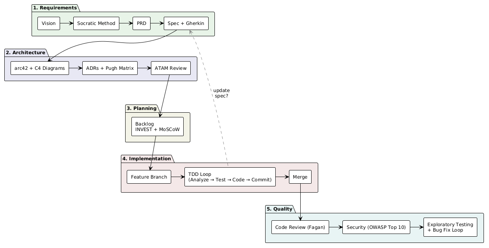

Einleitung
Dieses Dokument beschreibt, wie man mit KI-Agenten produktionsreife Software entwickelt, gesteuert durch Semantic Anchors.
Semantic Anchors sind kompakte Begriffe, die in LLMs zuverlässig reiches Domänenwissen aktivieren. Statt seitenlange Anweisungen zu schreiben, referenziert man ein Konzept, das das Modell bereits tief versteht. "Nutze TDD" ist kürzer als Test-Driven Development zu erklären. "Folge arc42" ist kürzer als 12 Architektur-Abschnitte zu beschreiben. Die Prompts bleiben kurz, präzise und wartbar.
Dieser Workflow wurde verwendet, um drei Open-Source-Projekte zu bauen, alle 100% KI-generiert. Die goldene Regel: Ich prompte nur, ich fasse den Code nie selbst an. Jede Zeile Code, jeder Test, jede Dokumentationsdatei wurde von der KI unter meiner Anleitung geschrieben.
-
dacli: Ein vollständiges CLI-Tool mit Spezifikation, Architekturdokumentation, Tests und Benutzerhandbuch. Von einer KI gebaut, von 5 verschiedenen LLMs gegengelesen.
-
Semantic Anchors Website: 228+ GitHub Stars, Dokumentation und eine Videoserie.
-
Vibe Coding Risk Radar: Eine interaktive Webanwendung zur Bewertung von KI-Coding-Risiken.
|
Semantic Anchors sind im Dokument mit gekennzeichnet. Ein Klick auf einen Anker führt zur vollständigen Definition auf der Semantic Anchors Website. |
|
Dieser Workflow ist für Greenfield-Projekte konzipiert, die von Grund auf mit KI-Unterstützung gebaut werden. Die Anpassung an Legacy-Codebasen erfordert zusätzliche Überlegungen (Reverse Engineering der bestehenden Architektur, Aufbau von Testabdeckung, inkrementelle Migration), die hier noch nicht behandelt werden. |
Das Grundprinzip: Kleine Schritte, hohe Autonomie
Der häufigste Fehler beim KI-Coding ist der Prompt "Baue mir ein CLI-Tool" mit der Erwartung eines funktionierenden Ergebnisses. Das ist so, als würde man einen Junior-Entwickler bitten, aus einem Einzeiler-Briefing eine komplette Anwendung zu bauen. Das Ergebnis ist bestenfalls unvorhersehbar.
Dieser Workflow geht den umgekehrten Weg: Die Arbeit wird in kleine, klar definierte Schritte zerlegt, und der Agent bearbeitet jeden davon eigenständig. Jeder Schritt erzeugt ein konkretes Artefakt, das man prüfen kann, bevor es weitergeht.
Das Paradox: Je kleiner man die einzelne Aufgabe macht, desto mehr Autonomie kann man dem Agenten geben. Ein vages "Baue mir X" erfordert ständige Kontrolle. Ein präzises "Implementiere Issue #42 mit TDD, basierend auf der Spec in src/docs/specs/" kann eigenständig laufen. Die Phasen in diesem Dokument sind darauf ausgelegt, genau solche präzisen, abgeschlossenen Aufgaben zu erzeugen.
Das hängt direkt mit Shannons Theorem zusammen. Jeder kleine Schritt ist eine kurze Übertragung über den verrauschten Kanal. Kurze Übertragungen mit Fehlerkorrektur (Tests, Linting, Review) sind weit zuverlässiger als eine lange, unkontrollierte Übertragung. LLM-Ausgaben sind inhärent nicht-deterministisch — derselbe Prompt kann unterschiedlichen Code erzeugen. TDD und Reviews sind die Fehlerkorrektur, die diesen verrauschten Kanal nutzbar macht. Der Agent arbeitet in einer engen Schleife: implementieren, testen, committen, Dokumentation prüfen. Man reviewt an den Übergängen zwischen Phasen, nicht nach jeder einzelnen Codezeile.
Workflow-Übersicht

Querschnittsthemen
Diese Prinzipien gelten für alle Phasen:
- Plain English nach Strunk & White
-
Alle Dokumentation verwendet kurze Sätze, aktive Sprache und keine überflüssigen Wörter. Für deutschsprachige Dokumentation gilt analog Gutes Deutsch nach Wolf Schneider.
- Conventional Commits
-
Alle Commits folgen einem standardisierten Format für eine saubere, maschinenlesbare Git-History.
- Docs-as-Code nach Ralf D. Müller
-
Dokumentation lebt im Repository als AsciiDoc, gebaut von docToolchain. Docs-as-Code behandelt Dokumentation wie Quellcode: versioniert, reviewt und automatisch gebaut.
- Definition of Done
-
Code besteht alle Tests, Feature-Branch ist gemergt oder PR erstellt, Dokumentation ist aktualisiert, Architekturentscheidungen sind dokumentiert.
Voraussetzungen
Bevor es losgeht, die Projektinfrastruktur aufsetzen:
-
Git-Repository initialisieren
-
docToolchain installieren und das arc42-Template herunterladen
-
KI-Coding-Umgebung mit einer
AGENTS.mdkonfigurieren (oder toolspezifisches Äquivalent wieCLAUDE.md)
cd <your-project>
curl -Lo dtcw https://doctoolchain.org/dtcw
chmod +x dtcw
./dtcw docker downloadTemplateDetails und andere Plattformen: Offizielle Installationsanleitung.
AGENTS.md als Projektgedächtnis
AGENTS.md ist ein offener Standard zur Steuerung von KI-Coding-Agenten.
Die Datei liegt im Repository-Root und wird automatisch zu Beginn jeder Session gelesen.
Sie dient als Projektgedächtnis: Coding-Konventionen, Architekturentscheidungen, Dateistruktur und Verweise auf wichtige Dokumente.
Die meisten KI-Coding-Tools unterstützen sie oder haben ein Äquivalent (Claude Code nutzt z.B. CLAUDE.md).
Eine minimale AGENTS.md für diesen Workflow:
# Project: <Projektname>
## Key Documents
- PRD: src/docs/specs/prd.adoc
- Specification: src/docs/specs/
- Architecture: src/docs/arc42/
- Reviews: src/docs/reviews/
## Conventions
- Documentation: Plain English according to Strunk & White
- Testing: TDD (London or Chicago School as appropriate)
- Commits: Conventional Commits, reference issue number
- Branches: feature/<issue-description>
## Current State
- Working on: EPIC #3
- Next issue: #42Diese Datei wird laufend aktualisiert.
Beim Start einer neuen KI-Session liest der Agent die AGENTS.md und hat sofort den nötigen Kontext.
|
Neue KI-Session pro EPIC starten oder wenn die Konversation träge wird.
Der Agent holt sich den Kontext automatisch aus |
Phase 1: Anforderungsermittlung
Schritt 1: Vision beschreiben
Die eigene Idee in eigenen Worten der KI erklären. Das ist die eine Stelle, an der mehr besser ist. Folgende Aspekte abdecken:
-
Das Problem, das gelöst werden soll
-
Wer es nutzen wird (Zielgruppe)
-
Wie das gewünschte Ergebnis aussieht
-
Einschränkungen: Budget, Zeitrahmen, Tech-Stack-Präferenzen, Plattform
-
Was es nicht ist: Explizite Grenzen helfen der KI, Scope Creep zu vermeiden
-
Inspiration: Ähnliche Tools oder Ansätze, die man gesehen hat
Diese Aspekte in beliebiger Reihenfolge abdecken. Der nächste Schritt bringt Struktur in die rohen Ideen.
Schritt 2: Anforderungen mit der Sokratischen Methode klären
Die KI auffordern, die Sokratische Methode zur Klärung der Anforderungen zu nutzen.
Use the Socratic Method to help me clarify requirements for [your project].
Ask me at most 3 questions at a time. Challenge my assumptions before
documenting anything.Das aktiviert gezieltes Fragen, Hinterfragen von Annahmen und produktiven Umgang mit Nicht-Wissen. Die Einschränkung "höchstens 3 Fragen" verhindert Fragen-Überflutung.
Zusätzliche Anker für strukturierte Abdeckung:
Use the Socratic Method combined with MECE to clarify requirements.MECE (Mutually Exclusive, Collectively Exhaustive) stellt sicher, dass die Fragen alle Bereiche überlappungsfrei abdecken.
Den Dialog fortführen, bis man mit der KI zufrieden ist, dass die Anforderungen klar sind.
Schritt 3: Als PRD dokumentieren
Die KI bitten, ein Product Requirements Document (PRD) als AsciiDoc zu schreiben. Ein PRD erfasst das Was und Warum, nicht das Wie: Problemstellung, Ziele, Nutzer-Personas, Erfolgskriterien und Scope-Grenzen.
Write a PRD based on our discussion. Save it as src/docs/specs/prd.adoc.
Follow Plain English guidelines according to Strunk and White.Schritt 4: Detaillierte Spezifikation erstellen
Aus dem PRD eine vollständige Spezifikation generieren:
Create a detailed specification from the PRD. Include:
- Use Cases
- Activity Diagrams for all flows (not just the happy path)
- Acceptance criteria in Gherkin format
Save as .adoc files in src/docs/specs/.Gherkin (Given/When/Then) liefert Akzeptanzkriterien, die sowohl für Menschen lesbar als auch maschinell testbar sind. Diese Kriterien werden später die Grundlage für TDD.
Activity Diagrams zwingen dazu, frühzeitig über Fehlerpfade, Randfälle und alternative Abläufe nachzudenken.
Phase 2: Architektur
Schritt 5: arc42-Architekturdokumentation erstellen
Die KI bitten, aus der Spezifikation eine Architektur abzuleiten:
Create an arc42 architecture document based on the specification in src/docs/specs/.
Save it in src/docs/arc42/.
Use PlantUML C4 diagrams for architecture visualization.arc42 bietet 12 Abschnitte, die alles von Kontextabgrenzung bis Deployment abdecken. Die KI kennt die Template-Struktur und füllt sie passend.
C4 Diagrams kombiniert mit PlantUML ermöglichen textbasierte Architektur-Visualisierung auf vier Ebenen: Context, Container, Component, Code. Die KI kann diese Diagramme ohne grafische Tools erstellen und ändern.
Architecture Decision Records
Architekturentscheidungen werden als ADRs nach Nygard dokumentiert. Jedes ADR folgt der Struktur: Titel, Status, Kontext, Entscheidung, Konsequenzen.
Für jede Entscheidung wird eine Pugh-Matrix mit 3-Punkt-Skala (-1, 0, +1) erstellt, um Alternativen gegen Qualitätskriterien zu bewerten.
Document this architecture decision as an ADR according to Nygard.
Evaluate alternatives using a Pugh Matrix with a 3-point scale (-1, 0, +1).
Align criteria with the quality goals defined in the arc42 documentation.
Create a GitHub issue for discussion before finalizing.Die KI erstellt jeden ADR zunächst als GitHub/GitLab Issue. Man prüft das Issue, kommentiert oder genehmigt es. Erst nach Freigabe wird der ADR in die arc42-Dokumentation übernommen. So ist jede Architekturentscheidung über die Issue-Historie nachvollziehbar. Alle ADRs müssen sich an den Qualitätszielen aus arc42 Abschnitt 1.2 orientieren.
Schritt 6: Architektur-Review (ATAM)
Ein Architektur-Review mit der Architecture Tradeoff Analysis Method (ATAM) durchführen:
Conduct an ATAM review of the architecture in src/docs/arc42/.
Focus on the quality attributes defined in our quality goals.
Document the results as a review report in src/docs/reviews/.ATAM bewertet systematisch die Architektur gegen Qualitätsattribut-Szenarien. Dieser Schritt kann nach signifikanten Architekturänderungen wiederholt werden.
Phase 3: Implementierungsplanung
Schritt 7: Backlog erstellen
Implementierungs-Issues aus der Spezifikation generieren:
Create EPICs and User Stories as GitHub issues based on the specification
in src/docs/specs/. Reference the arc42 documentation for technical context.
Follow the INVEST criteria for User Stories.
Use MoSCoW prioritization for the initial backlog order.
Mark dependencies between issues with labels or cross-references.INVEST stellt sicher, dass User Stories Independent, Negotiable, Valuable, Estimable, Small und Testable sind.
MoSCoW (Must have, Should have, Could have, Won’t have) liefert klare Priorisierung.
Die initiale Backlog-Reihenfolge folgt der EPIC-Sequenz. Die KI dokumentiert Abhängigkeiten zwischen Issues (z.B. "blocked by #12"), damit die Implementierungsreihenfolge klar ist. Mit wachsendem Projekt das Backlog regelmäßig groomen und nach neuen Erkenntnissen priorisieren.
Phase 4: Implementierungs-Loop
Schritt 8: Issue für Issue implementieren
Für jedes EPIC oder jede logische Gruppe von Issues einen Feature-Branch erstellen:
git checkout -b feature/<epic-oder-issue-beschreibung>Dann den Entwicklungs-Loop starten:
Select the next logical issue from the backlog (respect dependencies).
Analyze it and document your analysis as a comment on the issue.
Implement it using TDD. Commit when done.
Check if the spec or architecture docs need updating.Für jedes Issue:
-
Analysieren: Die KI untersucht das Issue, prüft zugehörige Specs und Architektur, checkt Abhängigkeiten zu anderen Issues und postet eine Analyse als Kommentar
-
Mit TDD implementieren: Die KI schreibt zuerst Tests, dann die Implementierung
-
Committen: Nach Implementierung und grünen Tests committen mit Referenz auf die Issue-Nummer
-
Docs prüfen: Fragen, ob Spezifikation oder Architekturdokumentation basierend auf den Erkenntnissen aktualisiert werden muss
TDD (Test-Driven Development) gibt es in zwei Schulen:
-
London School (Mockist): Unit Under Test isolieren, Abhängigkeiten mocken. Gut für interaktionslastigen Code.
-
Chicago School (Classicist): Verhalten über die öffentliche API testen, echte Kollaborateure nutzen. Gut für zustandsbasierte Logik.
Die KI wählt die passende Schule basierend auf den Code-Eigenschaften.
Jede Implementierung folgt dem Red-Green-Refactor-Zyklus und beachtet:
-
DRY (Don’t Repeat Yourself)
-
SOLID-Prinzipien
-
KISS (Keep It Simple, Stupid)
-
Ubiquitous Language aus Domain-Driven Design: dieselben Begriffe im Code wie in der Spezifikation
Feedback-Loop zur Spezifikation
Während der Implementierung werden Lücken in Spezifikation oder Architektur auffallen. Das ist normal und erwartet. Regelmäßig die KI fragen:
Based on what we learned during implementation, does the specification
or architecture documentation need updating?Die Docs aktualisieren, bevor es weitergeht. So bleibt die Spezifikation ein lebendiges Dokument statt eines veralteten Artefakts. Die Spec ist nicht nur ein Mittel zur Codegenerierung — sie bleibt die autoritative Beschreibung des Systemverhaltens, gepflegt neben dem Code, solange das Projekt lebt.
Merging
Wenn ein EPIC oder eine logische Gruppe von Issues abgeschlossen ist, den Feature-Branch mergen:
git checkout main
git merge feature/<epic-oder-issue-beschreibung>Für Teamprojekte Pull Requests für Code Review vor dem Merge nutzen.
Phase 5: Qualitätssicherung
Schritt 9: Code Review
Die KI bitten, die Codebasis zu reviewen:
Conduct a code review following the Fagan Inspection method.
Focus on correctness, maintainability, and adherence to the specification.
Document findings as a review report in src/docs/reviews/.Fagan Inspection ist ein strukturierter, systematischer Review-Prozess mit definierten Rollen und Phasen. Er findet Defekte, die Tests allein nicht aufdecken.
|
Ein anderes KI-Modell oder eine frische KI-Session für Reviews nutzen. Eine KI, die ihren eigenen Code reviewt, hat dieselben blinden Flecken wie ein Entwickler, der seinen eigenen Code liest. |
Schritt 10: Security Review
Conduct a security review based on the OWASP Top 10.
Document findings and recommendations in src/docs/reviews/.
Create GitHub issues for any vulnerabilities found.OWASP Top 10 deckt die kritischsten Sicherheitsrisiken für Webanwendungen ab. Auch für CLI-Tools oder Libraries identifiziert die Methodik gängige Schwachstellenmuster.
Schritt 11: Exploratives Testen
Sobald der Code V1-Status erreicht hat, gründlich explorativ testen:
Execute the tool and test it thoroughly. Focus on edge cases, unexpected
inputs, and error handling. The goal is to find bugs, not to confirm
that it works. Create a GitHub issue immediately for each bug you find.Das unterscheidet sich von den TDD-Tests während der Implementierung. Jene Tests verifizieren spezifiziertes Verhalten. Exploratives Testen sucht gezielt nach nicht-spezifiziertem Verhalten und Randfällen. Die KI führt das Tool direkt aus und interagiert damit wie ein echter Benutzer.
Schritt 12: Bug-Fix-Loop
Jeden Bug aus dem explorativen Testen analysieren und fixen. Nach dem Fix zurück zu Schritt 11 und erneut testen. Wiederholen, bis keine Bugs mehr gefunden werden.
Jeder Fix folgt derselben TDD-Disziplin: einen fehlschlagenden Test schreiben, der den Bug reproduziert, dann fixen.
Workflow anpassen
Dieser Workflow ist optimiert für Greenfield-Projekte mit einem einzelnen Entwickler und KI-Unterstützung. Überlegungen für andere Kontexte:
- Teamprojekte
-
Pull Requests statt direkter Merges nutzen. ADR-Diskussionen in GitHub Issues werden mit mehreren Reviewern wertvoller. Verschiedene KI-Modelle für verschiedene Review-Rollen einsetzen.
- Größere Projekte
-
Die Arbeit in mehrere Feature-Branches pro EPIC aufteilen. ATAM-Reviews nach jeder größeren Architekturänderung durchführen, nicht nur einmal. Das Backlog häufiger groomen, je größer das Projekt wird.
- Legacy-Codebasen
-
Dieser Workflow geht von einem Neustart aus. Die Anpassung an bestehenden Code erfordert zusätzliche Schritte: Reverse Engineering der bestehenden Architektur in arc42, Aufbau einer Basis-Testabdeckung und inkrementelle Migration. Erste Schritte: die KI arc42-Dokumentation aus der bestehenden Codebasis generieren lassen, dann Tests für die Bereiche hinzufügen, die geändert werden sollen.
- Frontend / HTML-Anwendungen
-
Dieser Workflow funktioniert gut für Backend-Code, CLIs und Bibliotheken, wo Compiler und TDD starke Fehlerkorrektur bieten. Frontend-Anwendungen lassen sich mit dem gleichen Ansatz bauen, aber konsistente UI ist schwerer automatisiert zu überprüfen. Die Fehlerkorrekturschichten, die Backend-Entwicklung zuverlässig machen (Compiler-Fehler, Test-Failures), haben kein direktes Äquivalent für visuelle Konsistenz.
Als Gegenmaßnahme: mit einem Design-System oder einer Komponentenbibliothek starten und einzelne Komponenten testen, bevor man Gesamtseiten integriert. Visual Regression Testing mit Playwright-Screenshot-Vergleichen in die CI-Pipeline aufnehmen. Das bedeutet erheblichen Mehraufwand gegenüber Backend-Projekten, aber ohne diese Maßnahmen tendiert die KI zu funktionalen, aber visuell inkonsistenten Ergebnissen.
Prompt Cheat Sheet
Die wichtigsten Einzeiler pro Phase mit den Semantic Anchors, die sie aktivieren:
| Phase | Prompt | Anker |
|---|---|---|
Anforderungen |
|
|
PRD |
|
|
Spezifikation |
|
|
Architektur |
|
|
ADR |
|
|
ATAM |
|
|
Backlog |
|
INVEST, MoSCoW |
Implementierung |
|
TDD London / Chicago, SOLID, DRY, DDD |
Code Review |
|
Fagan Inspection |
Security |
|
|
Testen |
|
— |
Querschnitts-Anker für alle Phasen: Docs-as-Code (Ralf D. Müller), Conventional Commits, Plain English / Strunk & White.
Hinweis zum Tooling
Dieses Dokument beschreibt einen transparenten Workflow mit Standard-Prompts. Keiner der Prompts verwendet Rollenspiel-Muster wie "Du bist ein Experten-Tester" oder "Agiere als Senior Architect." Das ist Absicht. Semantic Anchors aktivieren das richtige Wissensgebiet, ohne dem Modell eine Rolle vorzuspielen. "Führe eine Fagan Inspection durch" ist präziser als "Du bist ein erstklassiger Code-Reviewer."
In der Praxis profitiert der Workflow stark von spezialisiertem Tooling. MCP-Server wie Responsible Vibe MCP setzen agentische Workflows mit Phasen-Gates und Review-Checkpoints durch. Serena bietet semantische Code-Navigation, sodass der Agent mit Symbolen und Referenzen statt mit Rohtext arbeiten kann. Skill-Systeme wie Superpowers kodifizieren wiederverwendbare Prozessmuster wie TDD, Debugging und Code-Review-Workflows. Playwright MCP ermöglicht dem Agenten die Steuerung eines Browsers für End-to-End-Tests und exploratives Testen von Webanwendungen. Diese Tools automatisieren die Disziplin, die dieses Dokument manuell beschreibt.
Das Ziel dieses Dokuments ist Transparenz. Jeder Schritt ist sichtbar, jeder Prompt ist reproduzierbar, und nichts hängt von proprietärem Tooling ab. Wer den Prozess verstanden hat, kann beliebige Tools einsetzen, die das Einhalten erleichtern.
Fazit
Dieser Workflow zeigt, wie Semantic Anchors KI-gestützte Entwicklung systematisch und wiederholbar machen. Jeder Prompt bleibt kurz, weil der Anker das vollständige Konzept aktiviert. Die Fehlerkorrektur-Schichten (Spezifikation, Architektur-Review, TDD, Code Review, Security Review, exploratives Testen) stapeln sich, um den verrauschten LLM-Kanal zuverlässig zu machen.
Man muss kein Experte in jeder hier aufgeführten Methodik sein. Die KI kennt diese Konzepte. Die eigene Aufgabe ist es zu wissen, welchen Anker man wann einsetzt, und die Ergebnisse zu verifizieren.
Beim nächsten Projekt ausprobieren. Mit der Sokratischen Methode für die Anforderungen starten und sehen, wohin es führt. Wer Anker entdeckt, die im eigenen Workflow gut funktionieren: zur Sammlung beitragen.
Weiterführende Literatur
-
Birgitta Böckeler, Exploring Gen AI (martinfowler.com) — eine kritische Analyse von Spec-Driven-Development-Tools (Kiro, spec-kit, Tessl) und deren Trade-offs. Untersucht, wo aufwändige Upfront-Spezifikationen helfen und wo sie Overhead erzeugen.
-
Simon Martinelli, AI Unified Process — eine anforderungsgetriebene Methodik, die Rational-Unified-Process-Prinzipien mit KI-Tooling kombiniert. Behandelt KI als Konsistenz-Engine, die Code aus sich entwickelnden Spezifikationen regeneriert, in vier Phasen: Inception, Elaboration, Construction, Transition.
-
Ralf D. Müller & Simon Martinelli, Spec-Driven Development (software-architektur.tv, Folge 298) — Podcast-Diskussion darüber, wie Spezifikationen und Anforderungen ins Zentrum KI-gestützter Entwicklung rücken, und warum iterative Verfeinerung besser funktioniert als perfekte Upfront-Specs.